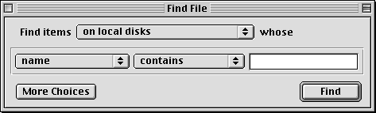
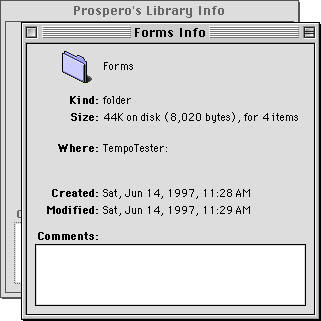

Modeless Dialog Boxes
A modeless dialog box looks like a document window without a size box, zoom box, or scroll bars. The user can move a modeless dialog box, make it inactive and active again, collapse or close it like any document window. A modeless dialog box has a close box on the far left of the title in the title bar region and a collapse box on the far right. For more on the use of collapse boxes, see "Collapsing a Window" (page 99).It is possible to display a modeless dialog box without a close box. This should only be done when the dialog box is displaying the status of an ongoing process (such as a Finder file copy) which would be interrupted or canceled if the dialog box was closed.
The title of a modeless dialog box is generally the same as the name of the menu item that activates the dialog box. In some cases, however, it may be useful to expand the title to provide more information, as shown in Figure 3-10. If the menu item includes an ellipsis character, don't include it in the title of the dialog box.
Modeless dialog boxes provide the most flexibility for users, allowing them to do any task at any time or in any order. Modeless dialog boxes may be used to allow users to change their documents, perform actions with data, or get information about files.
Modeless dialog boxes allow users to repeat an action as many times as necessary while the dialog box remains open. This feature is useful for tasks such as finding and replacing text in a word processor or numbers in a spreadsheet. Figure 3-9 shows a modeless dialog box.
Figure 3-9 A modeless dialog box

If the user activates a window behind an open modeless dialog box, the selected window appears in front of the dialog box. Users can relocate modeless dialog boxes to make other windows more visible. Unlike modal dialogs, modeless dialog boxes may also be left open when not in use, so they are easily available when needed. This option might be useful if a user wants to compare information about several documents, which is possible with Get Info windows in the Finder. Figure 3-10 shows two such windows open simultaneously.
Figure 3-10 Two open modeless dialog boxes

When an application displays a modeless dialog box, it should preset any controls to appropriate default values. Supply text in edit text fields whenever possible; typically this will be the text last used in the dialog box, if applicable, or the current text selection in a document. At a minimum, you should display an insertion point in the one of the edit text fields (usually the first field) when the dialog box is opened.
For more information on using modal dialog boxes, see "Modal Dialog Box Behaviors" in Macintosh Human Interface Guidelines.